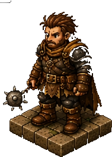
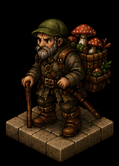
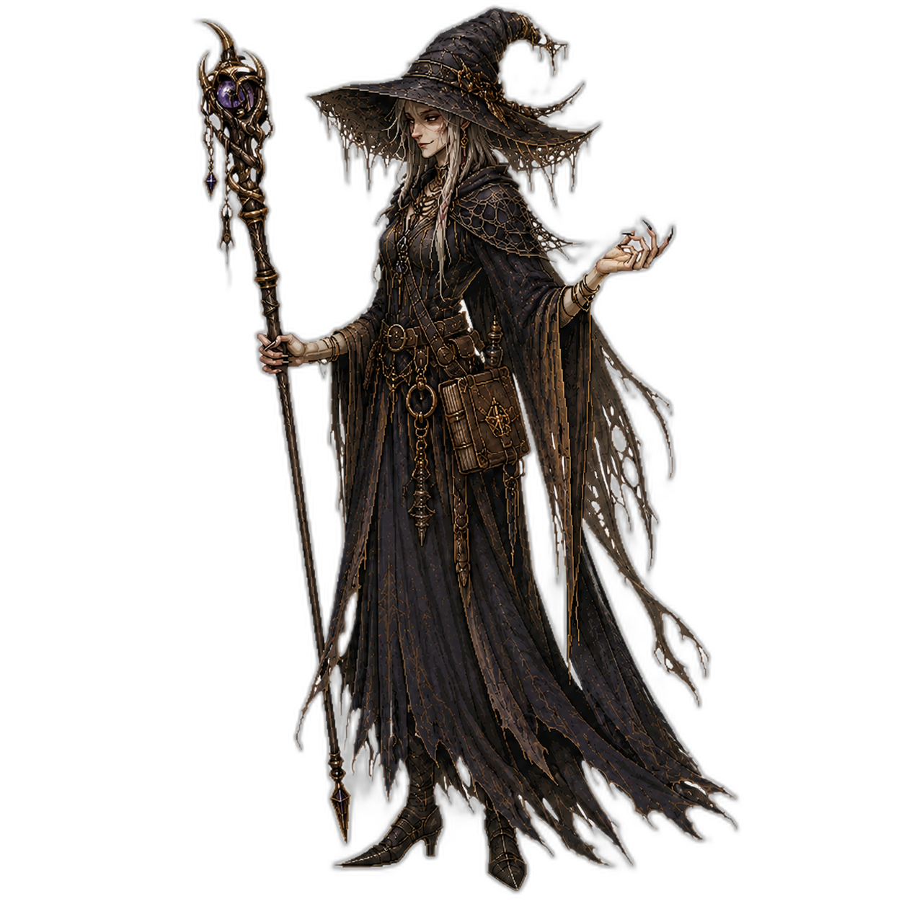
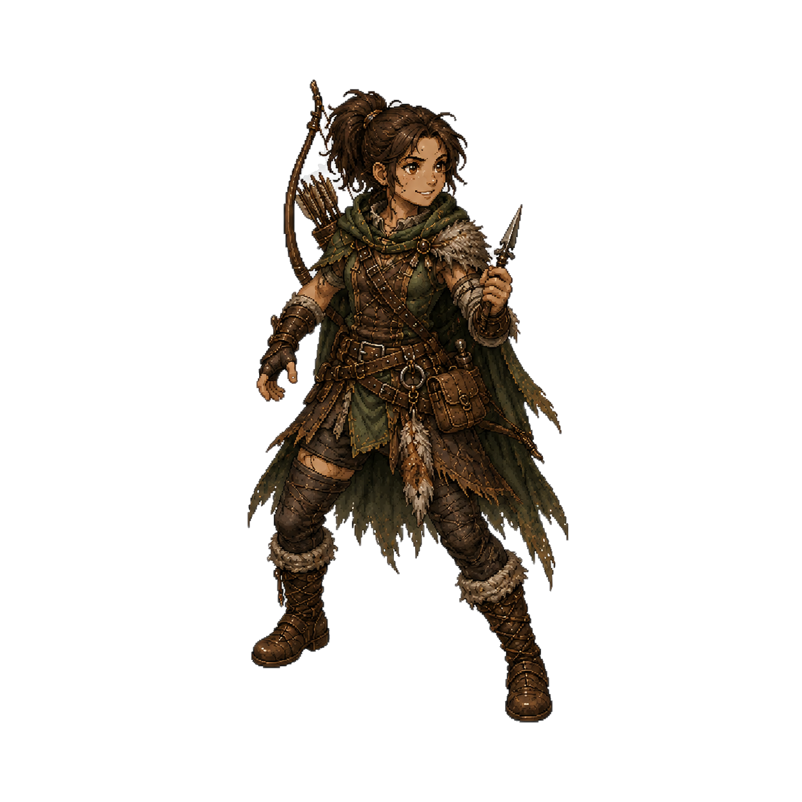
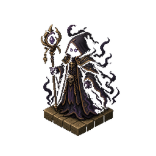
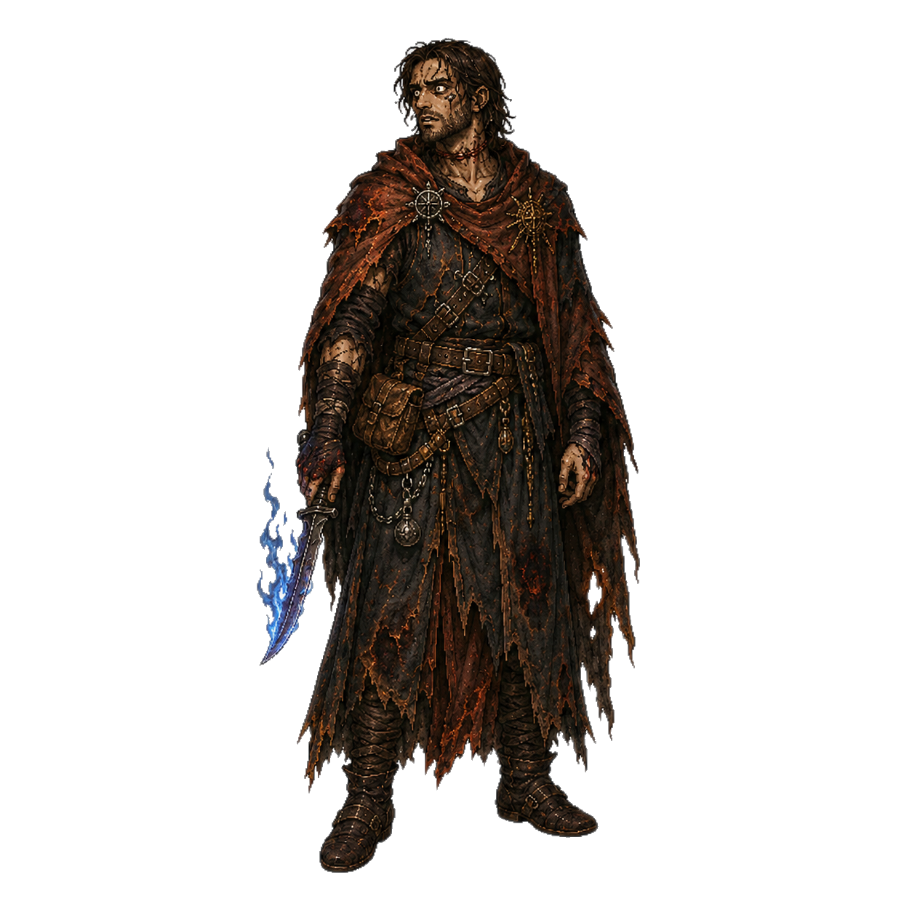
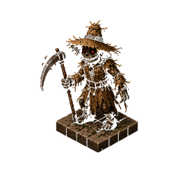
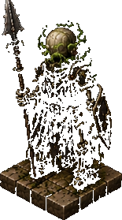
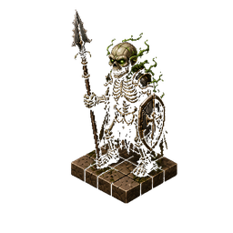

Cena I — A Estalagem da Beira do Pântano
A estalagem range com cada rajada de vento que varre o pântano. A luz das velas vacila, projetando sombras longas. Gregoras Pellos se apoia no batente da porta com os olhos de veterano varrendo a sala. Hobbleboot Sam seca um cálice atrás do balcão sem pressa.

Gregoras Pellos
"As Blackwoods começam a poucas milhas daqui. Quem entrar sem guia não volta. Simples assim."

Theron
"Não viemos até aqui para recuar. Diz o que sabe e nós te pagamos bem."

Hobbleboot Sam
"Já perdi três clientes boa gente lá dentro esse mês. Deixa eu servir uma bebida antes de vocês tomarem qualquer decisão estúpida."
Cena II — O Acampamento de Mutter Grimmhaar
Um fogo baixo ilumina a silhueta curvada de Mutter Grimmhaar. Ela olha para as brasas como se lesse o futuro nelas. Mac Rónán permanece de costas, ocupado com suas ervas em silêncio — mas os ouvidos bem abertos.

Mutter Grimmhaar
"Sangue por sangue, criança. Não há outra moeda que o Pântano aceite. Você tem o que pagar?"
Theron
"Depende do que você precisa. Fala logo, bruxa, não temos a noite toda."

Mac Rónán
"Cuidado com o tom, guerreiro. Ela já transformou homens mais arrogantes do que você em coisas muito menos eloquentes."
Cena III — As Ruínas de Choir
A névoa se adensa entre pedras negras. Choir materializa-se da escuridão. Ruzalka emerge do poço próximo, a água escorrendo de seus cabelos. Fariborz aparece das sombras, as chamas nos nós dos dedos pulsando.

Choir
"Os mortos aqui me contaram sobre vocês. Ficaram com muito mais medo de você do que você deveria ter deles."

Fariborz
"O fogo que carrego queimou cidades inteiras. Só aço não é o suficiente para o que vem aí, guerreiro."
Cena IV — Emboscada no Campo do Espantalho
O milharal estava silencioso demais. O espantalho na estaca central move a cabeça devagar — palha se derramando dos olhos negros. Não havia percebido. O grupo avança em formação quando o monstro salta das sombras.

Espantalho Assombrado → Theron SURPRESA!
Garras de aço lascam o ombro direito antes que Theron possa reagir — 8 de dano perfurante.
A dor volta Theron à realidade. Ele se vira, escudo na frente, e avança para trás do monstro antes que possa se reposicionar.
Ataco o espantalho pela lateral enquanto ele está distraído com Theron!
Theron → Espantalho Assombrado
Espada longa rasga o torso de palha — chamas lampejam pelo corte. 11 de dano cortante + fogo.
Espantalho Assombrado → Theron
Golpe giratório desviado pelo escudo — metal geme, mas segura.
Cena V — A Cripta do Esqueleto Lanceiro
As tochas da cripta projetam sombras dançantes nas paredes. O Esqueleto Lanceiro ergue-se da lápide com um farfalhar de ossos, lança enferrujada apontada para o corredor. Theron avança — desta vez, ele não vai ser pego de surpresa.
Theron → Esqueleto Lanceiro SURPRESA!
Golpe certeiro na coluna de ossos antes do esqueleto se virar — vértebras estalam. 14 de dano esmagador.

O esqueleto gira entre um barulho de dentes rangendo — ainda de pé. A lança rasga o ar em direção a Theron.

Esqueleto Lanceiro → Theron
Lança rasga o antebraço — 5 de dano perfurante. Escudo jogado para o lado.
Theron → Esqueleto Lanceiro
Golpe final esmiúça o crânio — ossos explodem em pó antigo. Abatido.
O silêncio volta à cripta. Ossos dispersos no chão de pedra. A tocha mais próxima cintila uma vez — e apaga.